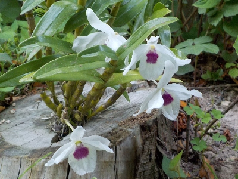
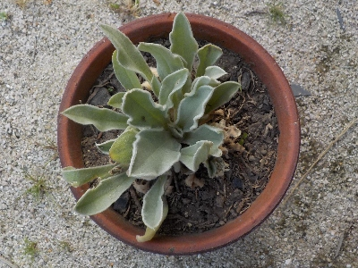
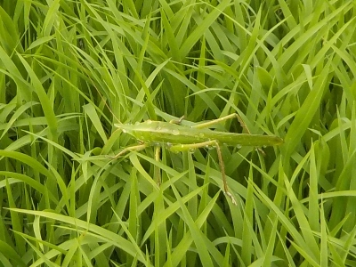
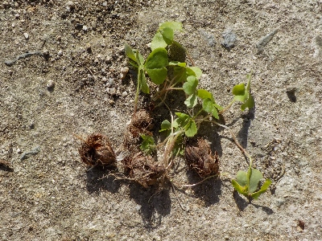

遊びで植物を育てよう
2025/05/28
セッコクが咲いていました。

成長している感じがしないセッコクですが、花が咲くってことは元気なのかな？
販売しているセッコクを見ますが、どうせなかなか成長しないんだろうと思って買う気がしないです。
【5月TOP】
【日記TOP】
【園芸TOP】
2025/05/19
田んぼの横にシルバーリーフが生えていました。

雑草が生えている中、シルバーリーフがあったのでちょっと目立ってました。
どこかから何かのタネが飛んできて生えたんでしょう。検索したらフランネルソウって名前が出ました。
多湿に弱いらしいので、鉢植えで育てることにしました。
シルバーリーフってお店でよく見るけど、買ってまでは欲しくないなと思ってました。タダなら試しに育ててもいいかな。
【5月TOP】
【日記TOP】
【園芸TOP】
2025/05/10
稲の苗に大きなバッタがいました。

バッタの大きさからして越冬してますね。バッタって冬が越せるんだ。
冬に弱って動けなくなるバッタをよく見てたので、なんとなく越冬しないと思ってました。
【5月TOP】
【日記TOP】
【園芸TOP】
2025/05/10
カタバミっで植木鉢によく生えますね。

掘り起こさないと土に球根が残って何度でも芽を出す厄介な草です。
小さくてかわいいけど、植木鉢には生えて欲しくないな。
【5月TOP】
【日記TOP】
【園芸TOP】
過去の日記
【2024年5月の日記】
【2023年5月の日記】
【2022年5月の日記】
【2021年5月の日記】
【2020年5月の日記】
【2019年5月の日記】
【2018年5月の日記】
【2017年5月の日記】
【2016年5月の日記】
【2015年5月の日記】
【2014年5月の日記】
【2013年5月の日記】
【5月TOP】
【日記TOP】
【園芸TOP】
畑仕事じゃないよ。
【おいしいものを食べよう。】【たくさん寝よう。】
【ソロ活をしよう!】【季節感のあることをしよう。】【動画視聴はほどほどに。】【当サイトの全てのコンテンツは無断転載禁止です。】